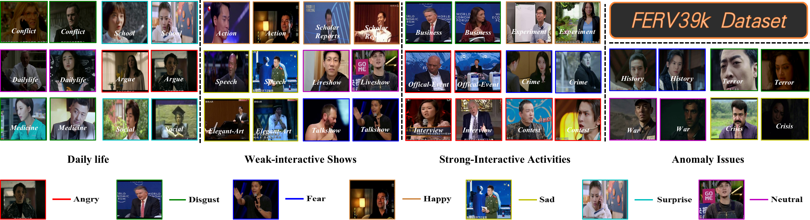
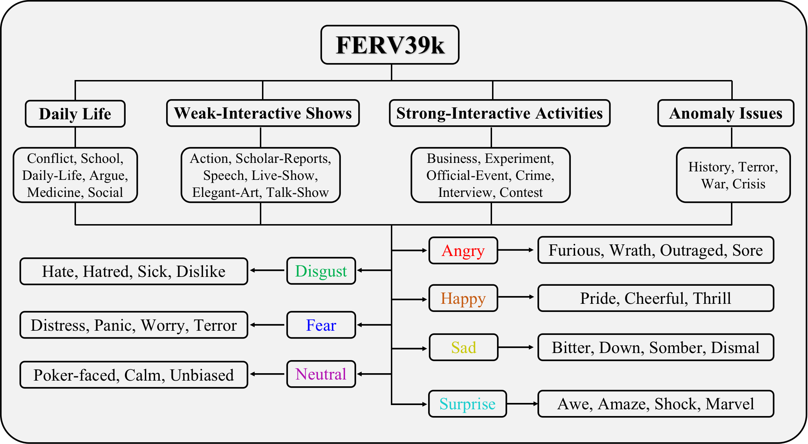
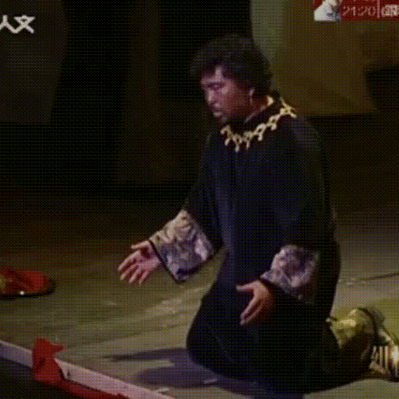
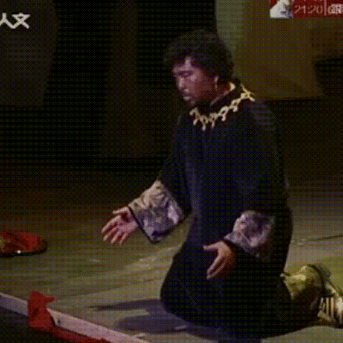
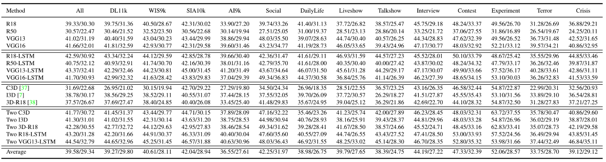

FERV39k: A Large-Scale Multi-Scene Dataset for Facial Expression Recognition
in Videos
IEEE Conference on Computer Vision and Pattern Recognition (CVPR) 2022

|
|
An overview of FERV39k composed by video frames of 7 basic expression across 4 scenarios subdivided by 22 scenes.
|

Download (annotations)
|

Videos at CVPR'2022
|

Analysis
|

GitHub Repo
|
Abstract
Current benchmarks for facial expression recognition (FER) mainly focus on static images,
while there are limited datasets for FER in videos. It is still ambiguous to evaluate
whether performances of existing methods remain satisfactory in real-world application-oriented
scenes. For example, “Happy” expression with high intensity in Talk-Show is more discriminating
than the same expression with low intensity in Official-Event. To fill this gap, we build a large-scale
multi-scene dataset, coined as FERV39k. We first analyze the important ingredients of constructing such a novel
dataset in three aspects: (1) multi-scene hierarchy and expression class,
(2) generation of candidate video clips, (3) trusted manual labelling process. Based on these guidelines,
we select 4 scenarios subdivided into 22 scenes, annotate 86k samples automatically obtained from 4k videos
based on the well-designed workflow, and finally build 38,935 video clips labeled with 7 classic expressions.
To benchmark it, we adopt and design four kinds of baseline frameworks for dynamic FER (DFER) and further
give an in-depth analysis on their performance across different scenes and reveal some challenges
for future research. To benchmark it, we adopt and design four kinds of baseline frameworks
for dynamic FER (DFER) and further give an in-depth analysis on their performance across
different scenes and reveal some challenges for future research. Besides, we systematically investigate
key components of FER in videos by ablation studies. We hope the FERV39k can advance research towards DFER.
Dataset hierarchy

|
|
Our design of 4 isolated scenarios, 22 scenes, 7 basic expressions and 26 descriptors.
|
Examples of scenes
We present several examples of expressions in several scenes.
Each group belongs to seven basic express-ions in a scene (Happy, Sad, Surprise, Fear, Angry, Disgust, and Neutral).
It can be seen the impact of scenes to an expression.
|
|
Dailylife
|
 

|
|
Elegant Art
|
|
|
Medicine
|

|
|
School
|
Empirical Studies and Analysis
(1) Results of four kinds of baseline architectures trained from scratch on FERV39k (WAR/UAR).

|
|
Results of four kinds of baseline architectures.
|
(2) Comparison of cross-scenario results on DL11k, WIS9k, SIA10k, and AI9k of FERV39k on RS50-LSTM.

|
|
Comparison of cross-scenario results of RS50-LSTM.
|
Download
下载链接
FAQs
Q0: License issue:
A0: The annotations of FERV39k are copyright by us and published under the Creative Commons Attribution-NonCommercial 4.0 International License.
Paper
Cite
@inproceedings{wang2022ferv39k,
title={FERV39k: A Large-Scale Multi-Scene Dataset for Facial Expression
Recognition in Videos},
author={Yan, Wang and Yuxuan, Sun and Yiwen, Huang and Zhongying, Liu and
Shuyong, Gao and Weifeng, Ge and Wenqiang, Zhang and Wei, Zhang},
booktitle={IEEE Conference on Computer Vision and Pattern Recognition
(CVPR)},
year={2022}
}
Acknowledgements
We sincerely thank the outstanding annotation team for their excellent work（京东众包的名字和链接）.
The template of this webpage is borrowed from Richard Zhang.
|
{kind=link}

{kind=link}